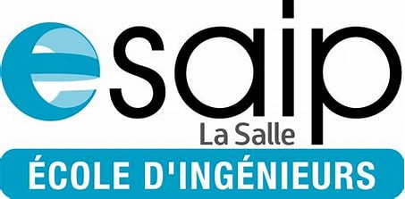
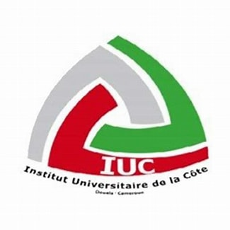

À PROPOS

Je m'appèle Eric YOUNGOUA, originaire de Cameroun et résident en france, je suis actuellement âgé de 19 ans. Je suis depuis quelques mois seulement inscrit dans le cycle ingénieur de l'ESAIP dans la spécialité informatique et réseau.
Un peu philosphe, j'ai une réelle passion pour l'apprentissage dans toutes ses formes: lecture, étude, émissions,etc... L'informatique étant le domaine le plus évolutif et le plus captivant depuis sa création a été pour moi la plus captivante des lectures.
Je suis très curieux, créatif et déterminé. J'aime à chaque fois acquérir de nouvelles connaissances et dévelloper de nouvelles vompétences. J'ai aussi des ambitions entrepreunariales. Visant moi aussi plus tard à lancer ma boîte, j'ai conscience que chaque connaissance et cgaque expérience est pour moi un pas en avant vers mon projet.
J'ai aussi de grandes qualités humaine étant quelqu'un d'assez sociable, je n'ai jamais eu de mal à entretenir de bonnes relations interpersonnelles et à coopérer avec autrui.
Ainsi, j'aspire à devenir un ingénieur et entrepreneur dans le domaine de l'informatique.
FORMATION

Cycle ingénieur en informatique et réseau
ESAIP-ECOLE D'INGENIEUR, ANGERS-FRANCE
Depuis septembre 2024, j'entreprends une formation en informatique et réseau à l'Ecole Supérieure Angevine d'Informatique et de Productique plus connu sous le nom d'ESAIP.
Depuis mon adhésion à l'école, j'y ai développé et continue d'y developper des compétences en:

Classes préparatoires PCSI
INSTITUT UNIVERSITAIRE DE LA CÔTE, DOUALA-CAMEROUN
Durant ces deux dernières année, j'ai fait des classes préparatoires à l'Institut Universitaire de la Côte plus connu sous le nom d'IUC à Douala au Cameroun. Ces deux années de classes préparatoires m'ont permises tout d'abord de développer une grande logique mathémathique, mais aussi de solides bases dans les métiers de la physique, de la chimie et de l'électronique.
EXPERIENCE PROFESSIONELLE
Assistant Maintenance
GMC Assurances, DOUALA-CAMEROUN
Durant un mois à compter du 17 juillet 2023, jai eu la chance d'effectuer un stage découverte à la Garantie Muutuelle des Cadres plus communément appelé GMC à Douala au Cameroun. Pendant ce bref moment, j'occupais le poste d'Assistant Maintenance dans le département réseau et informatique. J'ai pu à la suite de ce stage developperdes compétences telque:
- Maintenance matérielle et logicielle des machines Winndows
- Apprentissage de l'outil VMWare
- Etude des VLANs ainsi que des zones démilitarisées
COMPETENCES
| Travail d'équipe | Sens de l'observation |
| Communication éfficace | Ouverture d'esprit |
| Résolution des problèmes | Gestion de projet |
PROJET PROFFESSIONNEL
Passioné d'informatique et d'électronique, chaque circuit est pour moi une énigme à résoudre. Mon enthousiasme pour les système automatisés m'a conduit à envisager une formation en programmation après avoir passé deux années d'electronique. Je suis motivé par le désir d'explorer la convergence entre le monde virtuel de la programmation et la réalité tangible des machines, aspirant à contribuer à l'innovation technologique de demain.
QUALITES
| Ponctuel | Bienveillant |
| Travailleur | Motivateur |
| Poli | curieux |